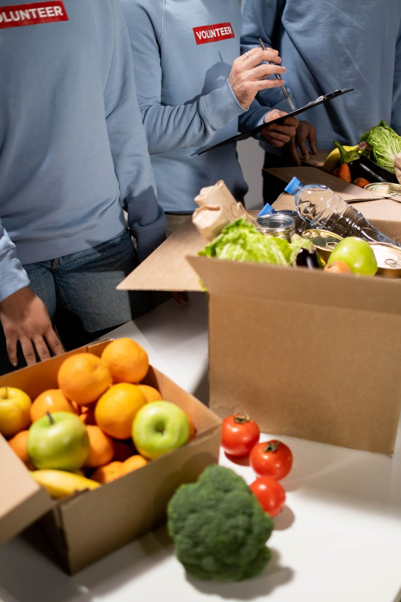

Our History
FoodForward SA, formerly known as FoodBank SA, was established in 2009 to address widespread food and nutrition insecurity in South Africa. We recover quality, in-date surplus food from the consumer goods supply chain — farmers, manufacturers, and retailers — and distribute it to a national network of vetted beneficiary organisations serving local communities.
Our Mission
To reduce hunger in South Africa by safely and cost-effectively securing quality food, and making it available to those who need it.
Our Vision
A South Africa without hunger.
Why We Exist
Roughly one third of all food produced in South Africa — approximately 10 million tonnes — is lost or wasted each year, while millions of people experience food insecurity. FoodForward SA bridges that gap by recovering good-quality surplus food and redistributing it efficiently, strengthening food security in both urban and rural communities across all nine provinces.
Our Network
Our work is powered by a national network of warehouses, staff, and thousands of volunteers who help collect, sort, and pack food for distribution to our beneficiary organisations every day.
